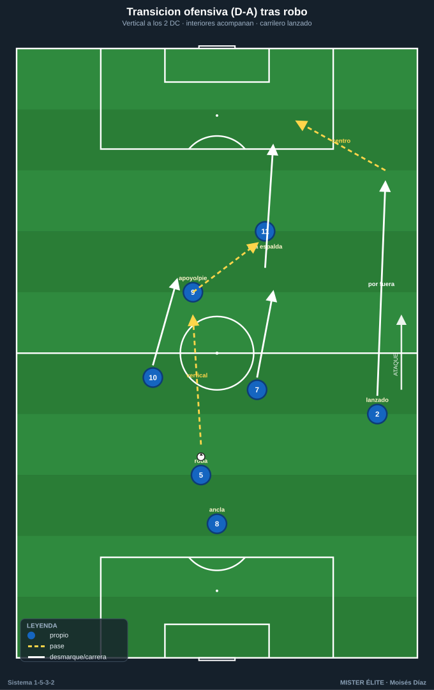
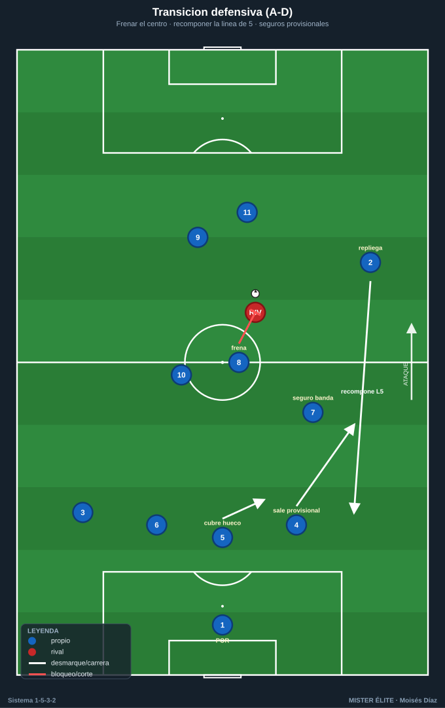
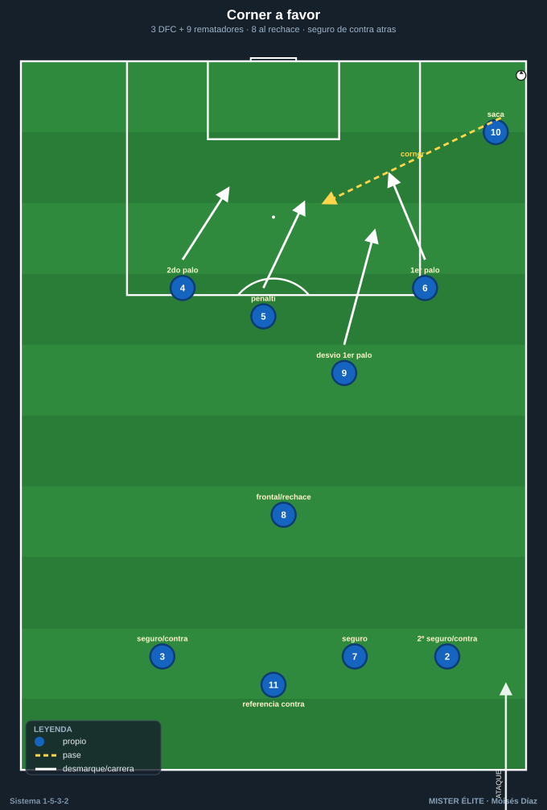

Módulo 04 · Transiciones y balón parado
El 1-5-3-2 es sólido en transición defensiva si los carrileros recomponen la línea de 5; peligroso en transición ofensiva por la profundidad de sus dos puntas. Su riesgo específico: perder el balón con los carrileros arriba.
1. Transición ofensiva (robo → ataque)
La ventaja del sistema: 2 puntas siempre arriba como referencia inmediata de contraataque.
- 1.ª opción — vertical a los puntas: tras robar, balón rápido al 9 (apoyo/pie) o al 11 (a la espalda). El 9 sostiene y descarga; el 11 corre el espacio.
- 2.ª opción — interiores que acompañan: los 2 interiores (7/10) llegan en apoyo y conducción para dar continuidad.
- 3.ª opción — carrileros lanzados: si el robo es alto/estable, los carrileros (2 y 3) arrancan por fuera para dar amplitud al contra. Se llega a 4-5 atacantes (2 DC + 2 interiores + carrilero).
- Principio: atacar el espacio que dejó el rival al perder; si no hay contra clara, fijar y pasar a ataque organizado (mutar a 1-3-5-2).

2. Transición defensiva (pérdida → repliegue)
Objetivo inmediato: recuperar la línea de 5 y no quedar abiertos por el flanco que estaba arriba.
- Frenar el balón: el jugador más cercano (interior o pivote) presiona para retrasar el primer pase y dar tiempo al repliegue. Presión tras pérdida 2–3 s si el robo permite contra-robo.
- Replegar el carrilero adelantado: el CAR del lado donde se perdió baja a recomponer la línea de 5 lo antes posible; mientras llega, el DFC lateral de ese lado sale a cubrir la banda y el líbero (5) bascula a tapar el hueco.
- Los 3 DFC sostienen la última línea; el pivote (8) tapa el carril central; los interiores recuperan posición.
- Riesgo a cubrir: la espalda del carrilero que estaba arriba. Si no llega: DFC lateral ataja en banda + líbero cubre el centro (basculación de 3 a 4 temporal).
- Regla: nunca defender en transición con la línea de 3 estirada; ante la duda, achicar hacia el balón y caer todos por detrás formando el 1-5-3-2.

3. Contrapresión inmediata (3–5 s)
Al perder en zonas altas/medias, los más cercanos (delanteros e interiores) saltan de inmediato:
- Saltan los 2–3 jugadores más cercanos; el resto cierra líneas de pase interiores (no todos al balón).
- El pivote (8) es el ancla: tapa el pase interior de salida del rival.
- Si la contrapresión falla, los lejanos replegan de inmediato a su línea (los carrileros a la de 5). La contrapresión compra tiempo para recomponer.
4. Balón parado a favor
La ventaja estructural
El 1-5-3-2 cuenta con 3 DFC altos y potentes (4-5-6) + el DC referencia (9) → ventaja física natural en el juego aéreo ofensivo.
Córners y faltas laterales
- Rematadores principales: los 3 DFC (4, 5, 6) + el 9 → bloque de 4 rematadores de envergadura.
- Estructura: 1 al primer palo (desvío), 2-3 atacando punto de penalti y segundo palo con carreras cruzadas, 1 al segundo palo. Bloqueos para liberar al rematador más alto.
- Resto: pivote (8) en la frontal para el rechace; 1-2 atrás (carrilero + 1 DFC o interior) vigilando la contra — clave porque el sistema sube mucha gente al área.

Frontales y saques de banda
- Frontal directa: lanzador según lado; 1-2 al rechace y bloque de seguridad atrás.
- Saques de banda en campo rival: el carrilero saca con el interior y el DC del lado (paredes), u opción de saque largo al área por la altura de los centrales.
5. Balón parado en contra
- Córner defensivo: con tanta altura, marcaje mixto (zona en los palos + hombre a los rematadores rivales). 1 en cada palo, zona en la zona de remate, hombre a los más peligrosos.
- Cobertura de transición: dejar a los 2 puntas (9 y 11) arriba como amenaza de contra → desincentiva que el rival suba a todos.
Ideas clave
- Transición defensiva = recuperar la línea de 5: frenar el centro primero, recomponer bandas después.
- El interior es el seguro provisional de la banda mientras el carrilero baja.
- Transición ofensiva = explotar la profundidad de los 2 DC y el desdoblamiento del carrilero.
- El ABP ofensivo es un arma real por la altura de los 3 centrales, sin descuidar el seguro de contra.
- Dejar siempre 2 puntas arriba en ABP defensivo para amenazar la contra.
Errores comunes
- Replegar persiguiendo por fuera y dejar el centro abierto (primero se frena el balón central).
- Carrilero que tarda en bajar tras pérdida con él arriba (la banda descubierta es el gol del rival).
- Subir a todo el equipo en córners ofensivos sin seguro de contra.
- Contrapresionar todos al balón a la vez (hay que cerrar las líneas de pase interiores).
- En ABP defensivo, no dejar referencia arriba y permitir que el rival suba a todos sin riesgo.